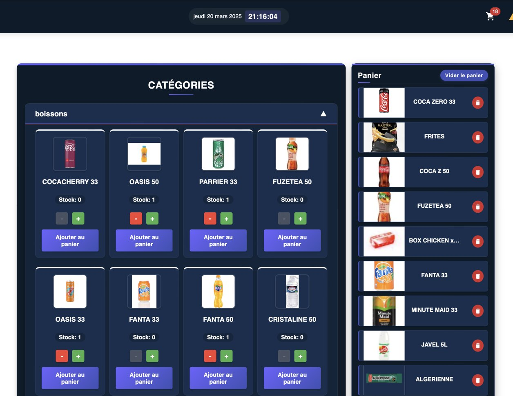
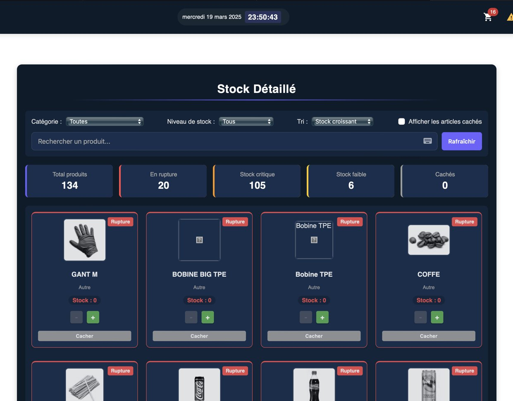
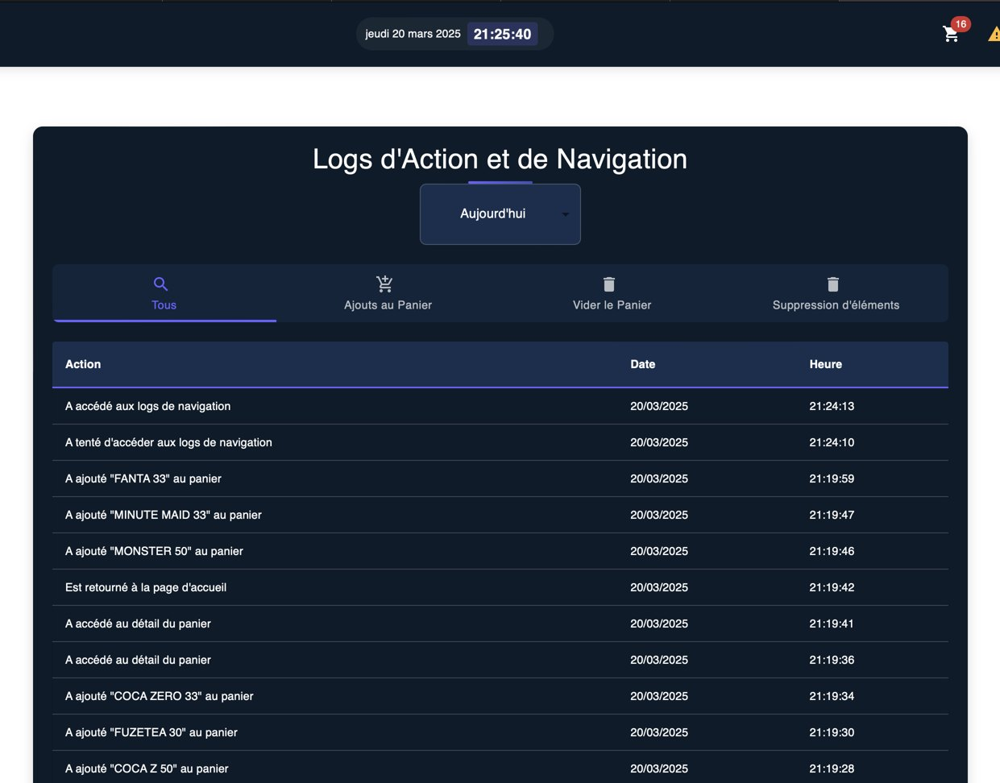
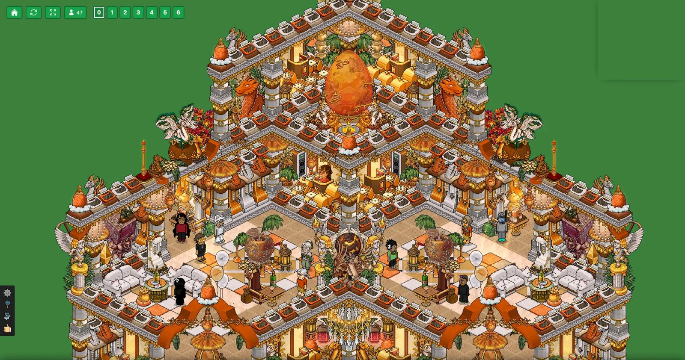

J’ai remplacé un carnet à souches par une application utilisée chaque jour dans trois restaurants. Je l’ai observée, dessinée, codée, déployée, puis j’ai formé les équipes et assuré le support jusqu’à la fin de mon alternance.
Diplômé du Bachelor Responsable de Projets Informatiques (ISITECH Lyon), après deux ans d’alternance chez MEXI, où j’étais seul sur la partie applicative d’une chaîne de restauration. Je cherche un poste en informatique, en France ou en Suisse : développeur, informaticien support ou technicien, du moment qu’il y a des gens à aider et des choses à faire marcher.
Le stock et les commandes fournisseurs, sur tablette, dans les trois restaurants de la chaîne.
Avant
Quand un produit manquait, voilà le trajet que suivait l’information :
01Un employé constate qu’il manque du stock
02Il l’écrit sur un carnet à souches
03Il photographie la souche
04Il l’envoie par messagerie
05Le dirigeant passe la commande
Sur trois semaines, j’ai compté 62 bons : 9 raturés ou illisibles, 4 sans quantité. Quand une livraison arrivait incomplète, personne ne pouvait prouver ce qui avait été commandé.

L’écran de commande : chaque produit a sa photo (j’en ai pris plus de 130), le panier est le même sur toutes les tablettes du restaurant.
Ce que j’ai fait, dans l’ordre
Oct. 2024
Sept séances d’observation dans les trois restaurants, entre les deux services. Chaque compte rendu renvoyé au responsable pour correction : cinq sur sept sont revenus corrigés.
30 oct. 2024
Expression de besoin validée : 19 exigences, ramenées à un recto pour qu’elle soit lue.
Nov. 2024
Maquettes sur Figma, modèle de données Firestore, premières versions.
19 févr. 2025
Une refonte casse tout un soir, la seule copie saine a 11 jours. Le lendemain : dépôt Git, préproduction à chaque pull request, production à la fusion, le tout par GitHub Actions.
Mars 2025
Pilote dans un premier restaurant, six semaines : deux formations de 40 minutes entre les services, et une fiche A4 plastifiée de huit captures, scotchée dans la réserve.
Avril et mai 2025
Deuxième puis troisième restaurant, une demi-journée chacun.

Le stock détaillé, filtré par niveau : rupture, critique, faible.

Le journal : chaque geste est daté par le serveur.
Trois décisions venues du terrain
Un clavier maison de 512 lignes
Le plus ancien employé du restaurant pilote gardait son carnet papier. Je lui ai demandé de passer une commande devant moi : en paysage, le clavier Android cachait le champ de saisie. J’ai écrit un clavier virtuel, déplaçable parce qu’il tape de la main droite. Une semaine plus tard il lâchait le carnet, et en juin c’est lui qui formait les saisonniers.
Une preuve plutôt qu’une impression
Un responsable voulait « pouvoir imprimer la commande ». Deux heures après, une livraison arrive avec deux bidons d’huile en moins et la souche est introuvable. Le vrai besoin était une preuve datée : chaque panier validé est archivé avec l’heure du serveur, consultable depuis n’importe quel appareil.
Trente lignes contre les bugs fantômes
Les tablettes ne rechargeaient jamais la page et tournaient sur du vieux code. Un contrôle de version de trente lignes compare la version en base à celle chargée et recharge tout seul : les signalements de bugs déjà corrigés ont disparu.
−35 % d’écarts relevés à la réception des livraisons, entre l’hiver 2024 et le printemps 2025. C’est le chiffre que je peux défendre ; je détaille les autres, et leurs limites, en entretien.
Deuxième année d’alternance
La caisse
Une seule application pour trois postes : la borne où le client commande, la caisse, et l’écran de la cuisine.
Environ 9 500 lignes, déployées en salle entre avril et juin 2026. Ce que j’en retiens :
Le paiement mixte
Le midi, un client sur cinq paie en partie en titres restaurant, en partie en carte ou en espèces. Je ne l’avais pas prévu au cadrage. Le module cumule les moyens de paiement et suit le reste dû en permanence, et tous les calculs se font en centimes entiers pour ne plus jamais perdre un centime dans une virgule.
Quatre heures plutôt qu’un statut
Le dirigeant voulait savoir combien de temps sépare le paiement de la remise du plateau. Chaque commande garde l’heure de sa création, de son paiement, du premier et du dernier sandwich validé : en juin 2026, ce temps moyen sort par restaurant et par tranche horaire.
Un écran lu à deux mètres
J’ai réglé la taille du texte sur place, à deux mètres, avec deux personnes de l’équipe, dont une qui porte des lunettes. Un samedi de rush, les commandes les plus anciennes sont passées en page 2 sans que personne les voie. Signalé le lundi, corrigé le jour même : l’affichage est devenu une pile, avec un bandeau permanent pour les commandes de plus de 15 minutes.
Commande 042
2 × Sandwichformule
1 × Boisson33 cl
Créée12:01:14
Payée12:01:52
En préparation12:03:10
Prête12:07:30
Payé : titres restaurant + carte
Exemple de ticket : les quatre heures enregistrées pour chaque commande.
Après la mise en production
Le support
Livrer, c’est la moitié du travail. L’autre moitié, c’est que ça tienne pendant le service, avec des gens qui n’ont pas le temps de lire une notice.
Former
Deux séances de 40 minutes entre les services, une fiche A4 plastifiée de huit captures, et un employé réticent devenu celui qui forme les saisonniers.
Répondre
Environ 40 signalements sur l’année, dont une dizaine de vrais défauts ; le reste, c’étaient des demandes d’évolution présentées comme des pannes, ou des problèmes hors application : wifi tombé, tablette déchargée.
Prévenir
Après un correctif de trois lignes parti un vendredi soir en plein service (20 minutes pour revenir en arrière, 30 minutes de retour au papier), une règle tenue jusqu’au bout : pas de mise en production après le jeudi midi, et toujours un passage en préproduction sur une vraie tablette.
Sauvegarder
Un export hebdomadaire et une restauration testée, une alerte de budget sur Firebase, et après une tablette morte en plein service : une tablette de secours par restaurant, une procédure d’une page et un inventaire du parc.
Transmettre
Un document de passation de 22 pages remis en juillet 2026, pour que la personne suivante ne reparte pas de zéro.
Projet personnel
Un jeu social en ligne, dans l’esprit de Habbo : des salles en vue isométrique, des avatars, des objets rares, et une économie virtuelle, les émeraudes, qu’on peut reconvertir après vérification d’identité.
On l’a construit à deux, en se partageant chaque partie selon les moments : l’un sur l’infrastructure pendant que l’autre écrivait le jeu, puis l’inverse. Le serveur de jeu en Java, le client dans le navigateur, le site et son administration, l’hébergement : on a touché à tout. habbozino.com

En jeu, dans le navigateur : le client Nitro (React et PixiJS), relié au serveur Java.
Quelques problèmes qu’on a réglés
Sans le code source
Les objets en édition limitée recevaient des numéros de série au hasard, alors qu’un « 1/100 » vaut plus qu’un « 47/100 ». La version Extended de l’émulateur n’est distribuée que compilée : décompilation, puis trois corrections directement dans le bytecode Java.
Trois entiers
Les avatars n’apparaissaient plus dans les salles. Le serveur envoyait trois champs de plus par avatar que le client ne lisait pas, et tout le flux binaire suivant était décalé. Trois lectures ajoutées dans le parser du client, et ces champs servent aujourd’hui aux bannières de profil vendues sur le site.
100 % de CPU
Des joueurs déconnectés au bout de dix à quinze minutes, et l’émulateur à 100 % de CPU en continu depuis plus de 16 heures. Sa console de l’émulateur lisait son entrée en boucle sans gérer la fin de fichier : une ligne dans le service systemd a suffi, une fois la cause trouvée.
Deux fois la même dépense
En relisant la boutique, une faille : deux requêtes simultanées pouvaient dépenser le même solde. Un verrou par joueur autour de chaque dépense, et des réclamations atomiques en base.
Zéro localhost
Un envoi manuel a mis en production une configuration pointant vers localhost et coupé le jeu plusieurs heures. On a alors écrit un script de déploiement en huit étapes, qui échouait s’il restait un seul « localhost ».
Formation et expériences
Parcours
2024 à 2026
Alternant développeur, MEXI (région lyonnaise). Applications de la chaîne MEXI KEBAB : My Orders, la caisse, le support des équipes, et la refonte du site vitrine en binôme avec le développeur senior. Trois semaines en entreprise, une semaine à l’école.
2023 à 2026
Bachelor Responsable de Projets Informatiques, ISITECH Lyon. Diplômé en 2026.
2024 à 2026
HabboZino, projet de fin d’études mené à deux, toujours en ligne.
2022 à 2023
BUT Informatique, première année, IUT de Montreuil.
2019 à 2021
Baccalauréat STI2D, lycée Blaise-Pascal, Charbonnières-les-Bains. En parallèle, serveur, plongeur et livreur le week-end dans un restaurant d’Oullins.
Ce que je sais faire, avec la preuve
Savoir-faire
Comprendre le besoin
Observer avant de coder, écrire une expression de besoin, la faire valider, dessiner les écrans sur Figma. Preuve : My Orders, sept séances en salle avant la première ligne.
Développer
JavaScript, React, Material UI, Firestore, TypeScript, PHP et Laravel, Java, SQL (MySQL), Git. Preuve : My Orders, la caisse, HabboZino.
Mettre en production
GitHub Actions, préproduction, Firebase Hosting, serveur Ubuntu, nginx, Cloudflare, systemd, scripts de déploiement. Preuve : trois restaurants équipés, un jeu en ligne.
Accompagner les utilisateurs
Former des équipes non techniques, répondre aux signalements, documenter, sauvegarder, prévoir le plan B. Preuve : un an et demi de support, une passation de 22 pages.
Ce que je travaille encore : les tests automatisés et le travail dans une grande équipe. C’est aussi pour ça que je cherche une équipe.